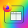

1. Create Your First Split View (Tab Mode)
- Select 2 to 4 tabs by holding
Cmd (Mac) or Ctrl (Windows) and clicking on them.
- Click the extension's icon  in your toolbar.
- That's it! A new tab opens with your pages side-by-side.
2. Manage Your View
- Name Your View: Click the field at the top of the split view and give it a clear name like "Project X Research".
- Remove a Panel: Click the small
× button to the right of a panel's address bar to remove it.
- Close the Whole View: Click the large
X button at the top right of the view.
3. Add a Tab to an Existing View
- Create a split view (see step 1).
- Go to another tab you wish to add.
- Right-click on that tab.
- In the menu, go to "Add to an existing Split View..." and choose your view by its name.
1. Créer votre première vue partagée (Mode Onglet)
- Sélectionnez 2 à 4 onglets en maintenant la touche
Cmd (Mac) ou Ctrl (Windows) enfoncée et en cliquant sur eux.
- Cliquez sur l'icône de l'extension dans votre barre d'outils.
- Et voilà ! Un nouvel onglet s'ouvre avec vos pages côte à côte.
2. Gérer votre vue
- Nommez votre vue : Cliquez sur le champ en haut de la vue partagée et donnez-lui un nom clair comme "Recherche Projet X".
- Retirez un panneau : Cliquez sur le petit bouton
× à droite de la barre d'adresse d'un panneau pour le retirer.
- Fermez toute la vue : Cliquez sur le gros bouton
X en haut à droite de la vue.
3. Ajouter un onglet à une vue existante
- Créez une vue partagée (voir étape 1).
- Allez sur un autre onglet que vous souhaitez ajouter.
- Faites un clic droit sur cet onglet.
- Dans le menu, allez sur "Ajouter à une vue partagée existante..." et choisissez votre vue par son nom.
1. Erstellen Sie Ihre erste geteilte Ansicht (Tab-Modus)
- Wählen Sie 2 bis 4 Tabs aus, indem Sie die
Cmd- (Mac) oder Strg-Taste (Windows) gedrückt halten und darauf klicken.
- Klicken Sie auf das Erweiterungssymbol in Ihrer Symbolleiste.
- Das ist alles! Ein neuer Tab öffnet sich mit Ihren Seiten nebeneinander.
2. Verwalten Sie Ihre Ansicht
- Benennen Sie Ihre Ansicht: Klicken Sie auf das Feld oben in der geteilten Ansicht und geben Sie ihr einen klaren Namen wie "Projekt X Recherche".
- Entfernen Sie ein Panel: Klicken Sie auf die kleine
×-Schaltfläche rechts neben der Adressleiste eines Panels, um es zu entfernen.
- Schließen Sie die gesamte Ansicht: Klicken Sie auf die große
X-Schaltfläche oben rechts in der Ansicht.
3. Fügen Sie einen Tab zu einer bestehenden Ansicht hinzu
- Erstellen Sie eine geteilte Ansicht (siehe Schritt 1).
- Gehen Sie zu einem anderen Tab, den Sie hinzufügen möchten.
- Machen Sie einen Rechtsklick auf diesen Tab.
- Gehen Sie im Menü zu "Zu einer bestehenden geteilten Ansicht hinzufügen..." und wählen Sie Ihre Ansicht nach ihrem Namen aus.
1. Crea tu primera vista dividida (Modo Pestaña)
- Selecciona de 2 a 4 pestañas manteniendo pulsada la tecla
Cmd (Mac) o Ctrl (Windows) y haciendo clic en ellas.
- Haz clic en el icono de la extensión en tu barra de herramientas.
- ¡Y ya está! Se abrirá una nueva pestaña con tus páginas una al lado de la otra.
2. Gestiona tu vista
- Nombra tu vista: Haz clic en el campo en la parte superior de la vista dividida y dale un nombre claro como "Investigación Proyecto X".
- Elimina un panel: Haz clic en el pequeño botón
× a la derecha de la barra de direcciones de un panel para eliminarlo.
- Cierra la vista completa: Haz clic en el botón grande
X en la parte superior derecha de la vista.
3. Añade una pestaña a una vista existente
- Crea una vista dividida (ver paso 1).
- Ve a otra pestaña que desees añadir.
- Haz clic derecho en esa pestaña.
- En el menú, ve a "Añadir a una vista dividida existente..." y elige tu vista por su nombre.
1. Crea la tua prima vista divisa (Modalità Scheda)
- Seleziona da 2 a 4 schede tenendo premuto il tasto
Cmd (Mac) o Ctrl (Windows) e cliccandoci sopra.
- Fai clic sull'icona dell'estensione nella tua barra degli strumenti.
- Fatto! Si aprirà una nuova scheda con le tue pagine affiancate.
2. Gestisci la tua vista
- Dai un nome alla tua vista: Fai clic sul campo in cima alla vista divisa e assegnale un nome chiaro come "Ricerca Progetto X".
- Rimuovi un pannello: Fai clic sul piccolo pulsante
× a destra della barra degli indirizzi di un pannello per rimuoverlo.
- Chiudi l'intera vista: Fai clic sul grande pulsante
X in alto a destra della vista.
3. Aggiungi una scheda a una vista esistente
- Crea una vista divisa (vedi passo 1).
- Vai a un'altra scheda che desideri aggiungere.
- Fai clic destro su quella scheda.
- Nel menu, vai su "Aggiungi a una vista divisa esistente..." e scegli la tua vista per nome.